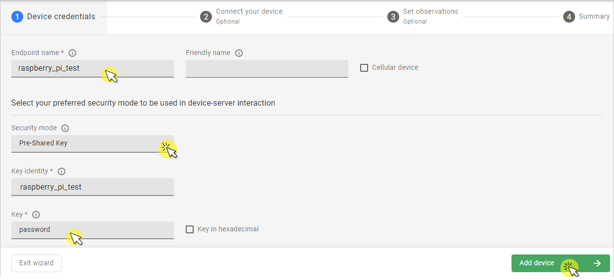
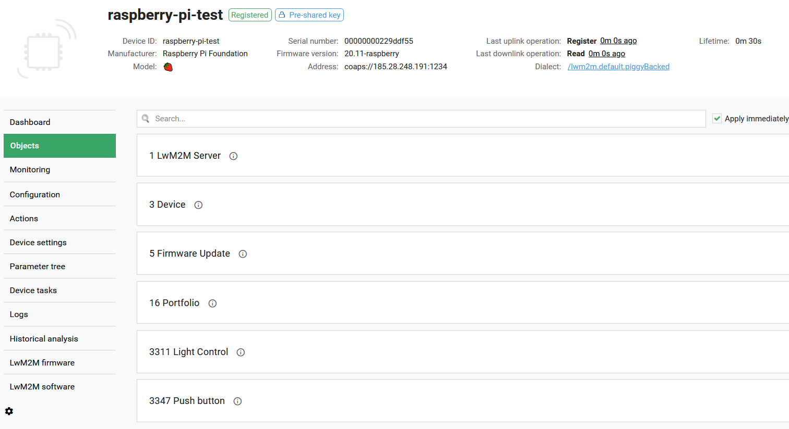
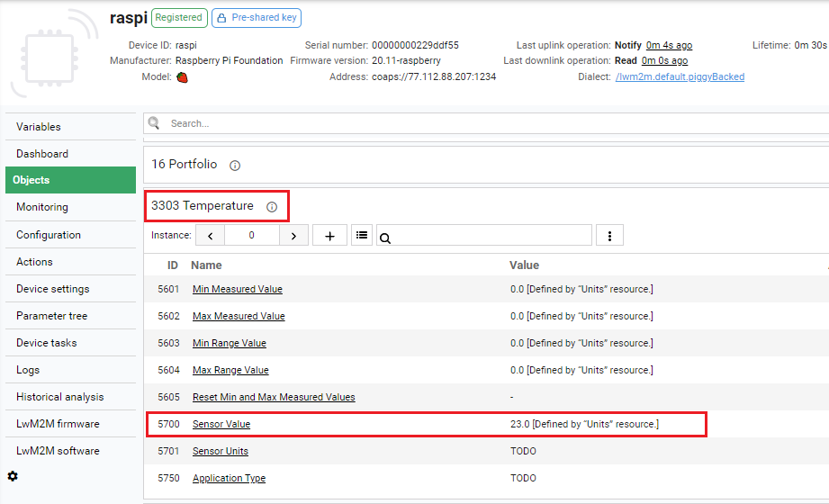

Implementing LwM2M objects on RaspberryPi#
Introduction#
Svetovid is a LwM2M client that gives you tools to implement selected LwM2M objects for RaspberryPi-based IoT devices using Python programming language. Svetovid is based on a state-of-the-art Anjay LwM2M client developed by AVSystem. It features the FSDM (File System Data Model) in which LwM2M objects are mapped to folders that follow a particular schema, and executables behave as expected by the LwM2M client that loads and manages them.
This tutorial will show you how to implement a temperature LwM2M object on your device and a push button using Svetovid. This will enable live readings of their resources (temperature, push button state and counter) in Coiote DM.
Prerequisites#
- Raspberry Pi 3 or 4 with a configured operating system and a set-up WiFi connection.
- A Sense HAT or a GrovePi with a temperature sensor (DHT11 or similar) and a push button (Grove-button or similar).
- A user with access to the Coiote IoT Device Management platform and appropriate permissions.
Step 1: Prepare your Sense HAT/GrovePi#
Sense HAT#
-
Install the Sense HAT packages:
sudo apt-get install sense-hat -
Check if Sense HAT is working correctly:
- Create a
hello_world.pyfile:from sense_hat import SenseHat sense = SenseHat() sense.show_message("Hello World!") - Run the program:
python hello_world.py
- Create a
If a Hello World! message is displayed, you're good to proceed.
Note
If you're new to Sense HAT, follow the getting started tutorial.
GrovePi#
-
To install the GrovePi repository, paste and execute the following commands:
mkdir ~/Dexter cd ~/Dexter git clone https://github.com/DexterInd/GrovePi cd ~/Dexter/GrovePi/Script bash ./update_grovepi.sh -
Check if the GrovePi libraries are working correctly:
- Connect a LED module to GrovePi port D4.
- In the terminal, type:
cd ~/Dexter/GrovePi/Software/Python && python grove_led_blink.py - The LED should start blinking.
Step 2: Install Svetovid#
-
To install Svetovid, paste and execute the following commands into your command-line terminal:
mkdir ~/AVSystem cd ~/AVSystem git clone https://github.com/AVSystem/Svetovid-raspberry-client.git cd Svetovid-raspberry-client sudo dpkg -i svetovid_20.11-raspberry_armhf.deb sudo dpkg -i svetovid-plugin-fsdm_20.11-raspberry_armhf.deb sudo dpkg -i avsystem_svetovid-20.11-raspberry-Linux-fsdmtool-runtime-python.deb -
In file
/usr/local/share/svetovid/bin/fsdm/lwm2m_object_registry.py, find thehttps://raw.githubusercontent.com/OpenMobileAlliance/lwm2m-registry/testentry and replace it withhttps://raw.githubusercontent.com/OpenMobileAlliance/lwm2m-registry/prod.
Step 3: Register your device in Coiote DM#
-
Disable the Svetovid service:
sudo systemctl disable svetovid.service --now -
Set the server connection details:
-
in
/etc/svetovid/config/security.json:{ "1": { "ssid": "1", "server_uri": "coaps://eu.iot.avsystem.cloud:5684", "is_bootstrap": "0", "security_mode": "psk", "pubkey_or_identity_hex": "XXXX", "privkey_or_psk_hex": "XXXX", "server_pubkey_hex": "", "holdoff_s": "0", "bs_timeout_s": "0" } } -
in
/etc/svetovid/config/svd.json:{ "device": { "endpoint_name": "YYYY", "udp_listen_port": 1234 }, "logging": { "default_log_level": "trace", "log_level": { "svd": "trace" } }, "lwm2m_version_config": { "min": "1.0", "max": "1.1" }, "in_buffer_size_b": 1024, "out_buffer_size_b": 1024, "msg_cache_size_b": 65536 }
Note
XXXX and YYYY should be replaced by the chosen values of endpoint name, PSK identity and PSK key.
Tip
XXXX values are in hex. To convert your plain text, use the following:
echo -n '<your-text-value>' | xxd -p -
-
Restart the Svetovid service:
sudo systemctl start svetovid.service --now
Step 4: Connecting to the LwM2M Server#
To connect to Coiote IoT Device Management LwM2M Server, please register at https://eu.iot.avsystem.cloud.
To connect the board:
- Log in to Coiote DM and from the left side menu, select Device Inventory.
- In Device Inventory, click Add device.
-
Select the Connect your LwM2M device directly via the Management server tile.

-
In the Device credentials step:
- In the Device ID enter your board endpoint name, e.g.
raspberry_pi_test.  -
In the Security mode section, select the security mode you've choosen in Compile the application step:
Note
If you choose Pre-Shared Key mode then type:
- In the Key identity field, the same name as in the Endpoint name field.
- In the Key field, the shared secret used in the device-server authentication.
- In the Device ID enter your board endpoint name, e.g.
-
Click the Add device button and Confirm in the confirmation pop-up.
-
-
Analyze the objects exposed by the device. 
Note
Your RaspberryPi-based device will feature a number of default LwM2M objects provided by Svetovid, for instance the Light Control /3311.
Step 5: Implement the LwM2M temperature object /3303 (only for GrovePi)#
-
Disable the Svetovid service:
sudo systemctl disable svetovid.service --now -
Generate a stub object in your
dm(data model) Svetovid folder by pasting and executing the following command in the terminal:$ sudo svetovid-fsdmtool generate --object 3303 --output-dir /etc/svetovid/dm --generator pythonTip
You can analyze the resource implementation in the
/etc/svetovid/dm/3303folder. For more details, see the Svetovid page on GitHub. -
Modify the python script in the
/etc/svetovid/dm/3303/Sensor_Value.pyfile. Open the file, replace the contents with the following script and click Save:#!/usr/bin/env python # -*- encoding: utf-8 -*- from fsdm import ResourceHandler, CoapError, DataType, KvStore import grovepi import math # Connect the Grove Temperature & Humidity Sensor Pro to digital port D4 # This example uses the blue colored sensor. # SIG,NC,VCC,GND sensor = 4 # The Sensor goes on digital port 4. # temp_humidity_sensor_type # Grove Base Kit comes with the blue sensor. blue = 0 # The Blue colored sensor. white = 1 # The White colored sensor. class ResourceHandler_3303_5700(ResourceHandler): NAME = "Sensor Value" DESCRIPTION = '''\ Last or Current Measured Value from the Sensor.''' DATATYPE = DataType.FLOAT EXTERNAL_NOTIFY = False def read(self, instance_id, # int resource_instance_id): # int for multiple resources, None otherwise # TODO: print value to stdout # print(0.0) [temp,humidity] = grovepi.dht(sensor,blue) print("%.02f"%(temp)) if __name__ == '__main__': ResourceHandler_3303_5700().main() -
Modify the python script in the
/etc/svetovid/dm/3303/resources/5700.pyfile. Open the file, replace the contents with the following script and click Save:#!/usr/bin/env python # -*- encoding: utf-8 -*- from fsdm import ResourceHandler, CoapError, DataType, KvStore import grovepi import math # Connect the Grove Temperature & Humidity Sensor Pro to digital port D4 # This example uses the blue colored sensor. # SIG,NC,VCC,GND sensor = 4 # The Sensor goes on digital port 4. # temp_humidity_sensor_type # Grove Base Kit comes with the blue sensor. blue = 0 # The Blue colored sensor. white = 1 # The White colored sensor. class ResourceHandler_3303_5700(ResourceHandler): NAME = "Sensor Value" DESCRIPTION = '''\ Last or Current Measured Value from the Sensor.''' DATATYPE = DataType.FLOAT EXTERNAL_NOTIFY = False def read(self, instance_id, # int resource_instance_id): # int for multiple resources, None otherwise # TODO: print value to stdout # print(0.0) [temp,humidity] = grovepi.dht(sensor,blue) print("%.02f"%(temp)) if __name__ == '__main__': ResourceHandler_3303_5700().main() -
Plug in the temperature sensor to digital port D4 of the GrovePi.
-
Restart the Svetovid service:
sudo systemctl restart svetovid.service --now -
Refresh device state in Coiote and see if the Temperature object
/3303has appeared in the Objects tab and values are reported for the Sensor Value5700resource:

Step 6: Implement the LwM2M push button based on the Multiple Axis Joystick object /3345#
Now you can implement the Push Button module based on the OMA DM Multiple Axis Joystick object /3345.
-
Type in the terminal:
$ sudo svetovid-fsdmtool generate --object 3345 --output-dir /etc/svetovid/dm --generator pythonTip
You can analyze the resource implementation in the
/etc/svetovid/dm/3345folder. For more details, see the Svetovid page on GitHub. -
Type in the terminal:
cd /etc/svetovid/dm/3345/resources && ./5550 read. You should be able to see a default value reported in the command-line terminal. -
In home directory, create the file
~/button_object_forwarder.pyand paste the following into it:from sense_hat import SenseHat from time import sleep from fsdm import KvStore sense = SenseHat() sense.clear() #KvStore(namespace=3345).set('counter', 0) #KvStore(namespace=3345).set('state', False) released_before = False counter = 0 while True: for event in sense.stick.get_events(): if event.action == "pressed": if event.direction == "middle": sense.show_letter("M") KvStore(namespace=3345).set('state', True) if released_before: counter = counter + 1 KvStore(namespace=3345).set('counter', counter) released_before = False elif event.action == "released": if event.direction == "middle": sense.show_letter("m") KvStore(namespace=3345).set('state', False) released_before = True else: sense.clear() # Wait and clear the screen sleep(0.5) sense.clear()from time import sleep import grovepi from fsdm import KvStore button = 3 KvStore(namespace=3345).set('counter', 0) KvStore(namespace=3345).set('state', False) released_before = False counter = 0 grovepi.pinMode(button, "INPUT") while True: try: state = grovepi.digitalRead(button) KvStore(namespace=3345).set('state', True) print("State:{}".format(state)) if state == 1: if released_before: counter = counter + 1 print("Counter:{}".format(counter)) KvStore(namespace=3345).set('counter', counter+1) released_before = False KvStore(namespace=3345).set('state', True) else: released_before = True KvStore(namespace=3345).set('state', False) sleep(.2) except IOError: print("Error") -
Modify the python script in the
/etc/svetovid/dm/3345/Digital_Input_Counter.pyfile. Open the file, replace the contents with the following script and click Save:#!/usr/bin/env python # -*- encoding: utf-8 -*- from fsdm import ResourceHandler, CoapError, DataType, KvStore class ResourceHandler_3345_5501(ResourceHandler): NAME = "Digital Input Counter" DESCRIPTION = '''\ The cumulative value of active state detected.''' DATATYPE = DataType.INTEGER EXTERNAL_NOTIFY = False def read(self, instance_id, # int resource_instance_id): # int for multiple resources, None otherwise value = KvStore(namespace=3345).get('counter') if value is None: # The value was not set, so it's not found. # raise CoapError.NOT_FOUND value = 0 print(value) # TODO: print value to stdout # print(0) if __name__ == '__main__': ResourceHandler_3345_5501().main() - Modify the python script in the
/etc/svetovid/dm/3345/Digital_Input_State.pyfile. Open the file, replace the contents with the following script and click Save:#!/usr/bin/env python # -*- encoding: utf-8 -*- from fsdm import ResourceHandler, CoapError, DataType, KvStore class ResourceHandler_3345_5500(ResourceHandler): NAME = "Digital Input State" DESCRIPTION = '''\ The current state of a digital input.''' DATATYPE = DataType.BOOLEAN EXTERNAL_NOTIFY = False def read(self, instance_id, # int resource_instance_id): # int for multiple resources, None otherwise state = KvStore(namespace=3345).get('state') if state is None: # The value was not set, so it's not found. raise CoapError.NOT_FOUND #state = False print(state) # TODO: print value to stdout #print(0) if __name__ == '__main__': ResourceHandler_3345_5500().main() - Modify the
/etc/svetovid/dm/3345/resources/5500file:#!/usr/bin/env python # -*- encoding: utf-8 -*- from fsdm import ResourceHandler, CoapError, DataType, KvStore class ResourceHandler_3345_5500(ResourceHandler): NAME = "Digital Input State" DESCRIPTION = '''\ The current state of a digital input.''' DATATYPE = DataType.BOOLEAN EXTERNAL_NOTIFY = False def read(self, instance_id, # int resource_instance_id): # int for multiple resources, None otherwise state = KvStore(namespace=3345).get('state') if state is None: # The value was not set, so it's not found. raise CoapError.NOT_FOUND #state = False print(state) # TODO: print value to stdout #print(0) if __name__ == '__main__': ResourceHandler_3345_5500().main() - Modify the
/etc/svetovid/dm/3345/resources/5501file:#!/usr/bin/env python # -*- encoding: utf-8 -*- from fsdm import ResourceHandler, CoapError, DataType, KvStore class ResourceHandler_3345_5501(ResourceHandler): NAME = "Digital Input Counter" DESCRIPTION = '''\ The cumulative value of active state detected.''' DATATYPE = DataType.INTEGER EXTERNAL_NOTIFY = False def read(self, instance_id, # int resource_instance_id): # int for multiple resources, None otherwise value = KvStore(namespace=3345).get('counter') if value is None: # The value was not set, so it's not found. # raise CoapError.NOT_FOUND value = 0 print(value) # TODO: print value to stdout # print(0) if __name__ == '__main__': ResourceHandler_3345_5501().main() - Plug in the push button to digital port D3 of the GrovePi/Sense HAT.
- Restart Svetovid:
sudo systemctl restart svetovid.service --now -
Refresh device state in Coiote and see if the Multiple Axis Joystick object
/3345has appeared in the Objects tab and values are reported for the Digital Input State5500and Digital Input Counter5501resources: